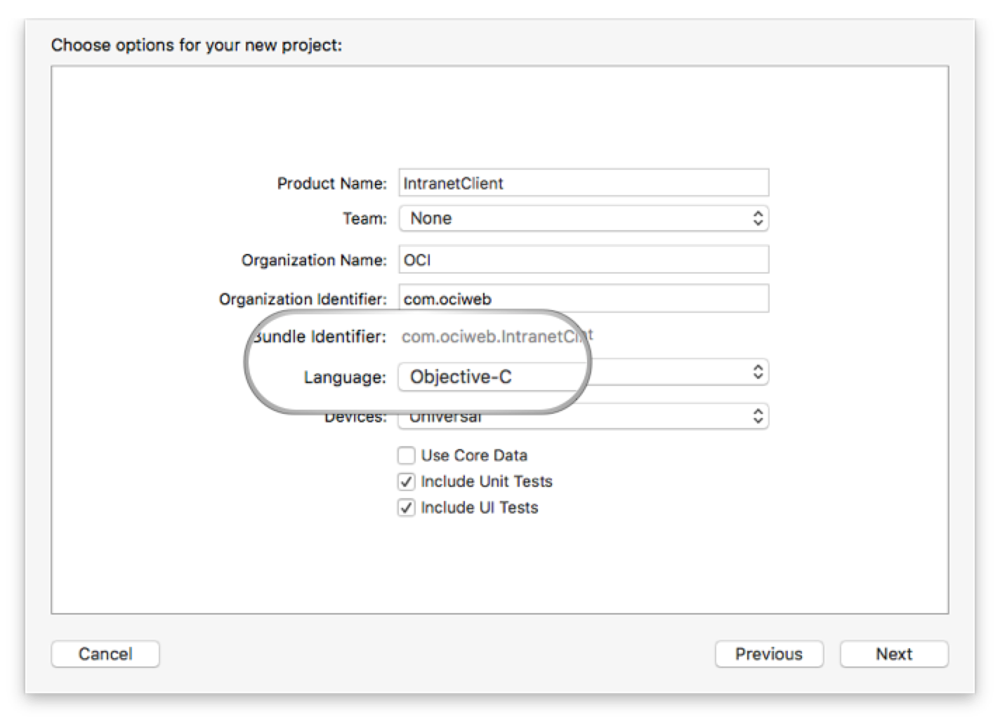
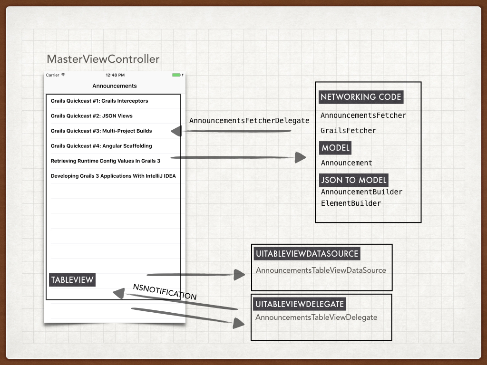
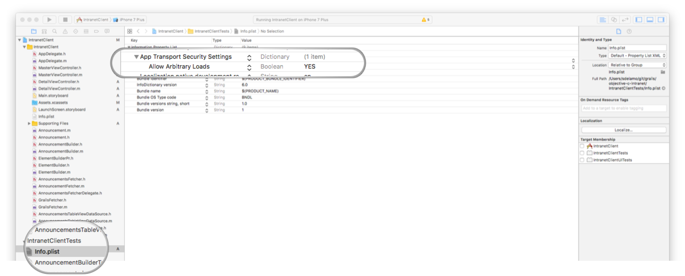
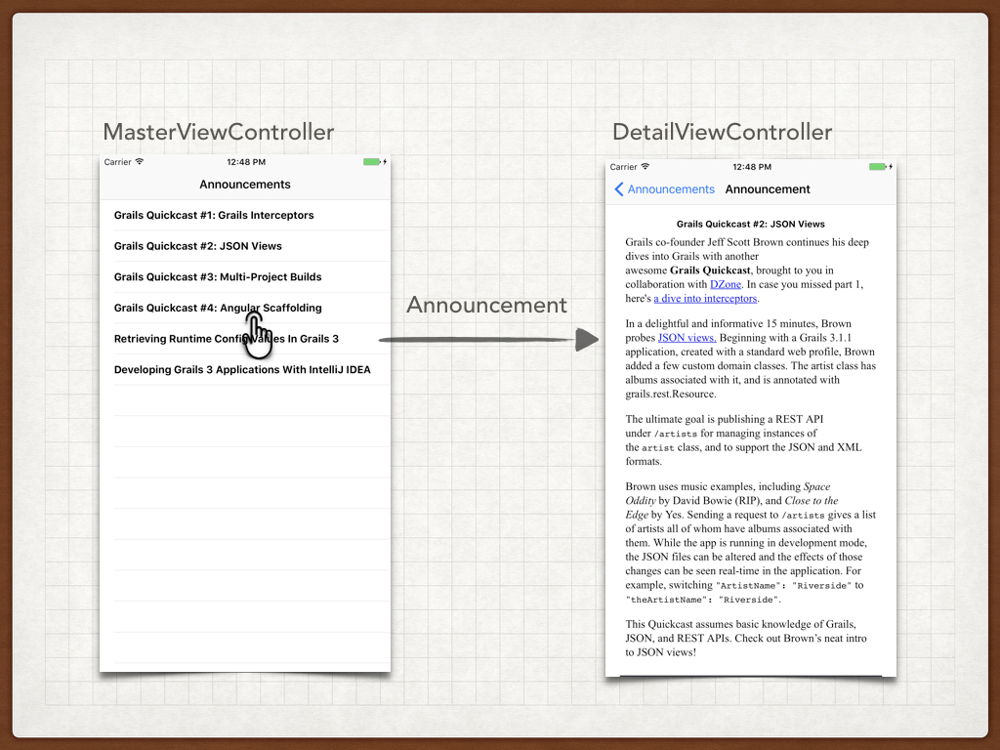

$ grails create-app intranet.backend.grails-app --profile rest-api $ cd grails-app
Building a Objective-C iOS Client powered by a Grails backend
This guide demonstrates how you can use Grails as a backend for an iOS app built with Objective-C
Authors: Sergio del Amo
Grails Version: 3.2.6
1 Getting Started
In this guide you are going to build a Grails application which will serve as a company intranet backend. It exposes a JSON API of company announcements.
Additionally, you are going to build an iOS App, the intranet client, which consumes the JSON API offered by the backend.
The guide explores the support of diffent API versions.
1.1 What you will need
To complete this guide you will need the following:
-
Some time on your hands
-
A decent text editor or IDE
-
JDK 1.7 or greater installed with
JAVA_HOMEconfigured appropriately -
The latest stable version of Xcode. This guide was written with Xcode 8.2.1
1.2 How to complete the guide
To complete this guide, you will need to checkout the source from Github and work through the steps presented by the guide.
To get started do the following:
-
Download and unzip the source or if you already have Git:
git clone https://github.com/grails-guides/building-an-ios-objectc-client-powered-by-a-grails-backend.git
To follow the Grails part:
-
cdintograils-guides/building-an-ios-objectc-client-powered-by-a-grails-backend/initial
Alternatively, if you already have Grails installed then you can create a new application using the following command in a Terminal window:
When the create-app command completes, Grails will create a grails-app directory with an application configured to create a REST application (due to the use of the parameter profile=rest-api ) and configured to use the hibernate feature with an H2 database.
You can go right to the completed Grails example if you cd into grails-guides/building-an-ios-objectc-client-powered-by-a-grails-backend/complete
|
To follow the iOS part:
-
cdintograils-guides/building-an-ios-objectc-client-powered-by-a-grails-backend/initial-objectivec-ios -
Head on over to the next section
Alternatively, you can create an iOS app using the New Project Wizard of Xcode Studio as illustrated in the next screenshots.



You can go right to the completed version 1 of the iOS example if you cd into grails-guides/building-an-ios-objectc-client-powered-by-a-grails-backend/complete-objectivec-ios-v1
|
You can go right to the completed version 2 of the iOS example if you cd into grails-guides/building-an-ios-objectc-client-powered-by-a-grails-backend/complete-objectivec-ios-v2
|
2 Overview
The next image illustrates the behavior of iOS app version 1. The iOS app is composed by two View Controllers.
-
When the iOS application initial screen loads, it requests an announcements list.
-
The Grails app sends a JSON payload which includes a list of announcements. For each announcement a unique identifier, a title and a HTML body is included.
-
The iOS app renders the JSON Payload in a UITableView
-
The user taps an announcement’s title and the app segues to a detail screen. The initial screen sends the detail screen the announcement identiifer, title and HTML body. The latter will be rendered in a UIWebView

3 Writing the Grails Application
Now you are ready to start writing the Grails application.
3.1 Create a Domain Class - Persistent Entities
We need to create persistent entities to store company announcements. Grails handles persistence with the use of Grails Domain Classes:
A domain class fulfills the M in the Model View Controller (MVC) pattern and represents a persistent entity that is mapped onto an underlying database table. In Grails a domain is a class that lives in the grails-app/domain directory.
Grails simplifies the creation of domain classes with the create-domain-class command.
./grailsw create-domain-class Announcement
| Resolving Dependencies. Please wait...
CONFIGURE SUCCESSFUL
Total time: 4.53 secs
| Created grails-app/grails/company/intranet/Announcement.groovy
| Created src/test/groovy/grails/company/intranet/AnnouncementSpec.groovyJust to keep it simple, we assume the company announcements just contain a title and a HTML body. We are going to modify the domain class generated in the previous step to store that information.
grails-app/domain/intranet/backend/Announcement.groovy
package intranet.backend
class Announcement {
String title
String body
static constraints = {
title size: 0..255
body nullable: true
}
static mapping = {
body type: 'text' (1)
}
}| 1 | it enables us to store strings with more than 255 characters in the body. |
3.2 Domain Class Unit Testing
Grails makes testing easier from low level unit testing to high level functional tests.
We are going to test the constraints we defined in the Announcement domain Class in constraints property. In particular nullability and length of both title and body properties.
src/test/groovy/intranet/backend/AnnouncementSpec.groovy
package intranet.backend
import grails.test.mixin.TestFor
import spock.lang.Specification
@TestFor(Announcement)
class AnnouncementSpec extends Specification {
void "test body can be null"() {
expect:
new Announcement(body: null).validate(['body'])
}
void "test title can not be null"() {
expect:
!new Announcement(title: null).validate(['title'])
}
void "test body can have a more than 255 characters"() {
when: 'for a string of 256 characters'
String str = ''
256.times { str += 'a' }
then: 'body validation passes'
new Announcement(body: str).validate(['body'])
}
void "test title can have a maximum of 255 characters"() {
when: 'for a string of 256 characters'
String str = ''
256.times { str += 'a' }
then: 'title validation fails'
!new Announcement(title: str).validate(['title'])
when: 'for a string of 256 characters'
str = ''
255.times { str += 'a' }
then: 'title validation passes'
new Announcement(title: str).validate(['title'])
}
}We can run the every test, including the one we just created, with the command test_app
./grailsw test-app
| Resolving Dependencies. Please wait...
CONFIGURE SUCCESSFUL
Total time: 2.534 secs
:complete:compileJava UP-TO-DATE
:complete:compileGroovy
:complete:buildProperties
:complete:processResources
:complete:classes
:complete:compileTestJava UP-TO-DATE
:complete:compileTestGroovy
:complete:processTestResources UP-TO-DATE
:complete:testClasses
:complete:test
:complete:compileIntegrationTestJava UP-TO-DATE
:complete:compileIntegrationTestGroovy UP-TO-DATE
:complete:processIntegrationTestResources UP-TO-DATE
:complete:integrationTestClasses UP-TO-DATE
:complete:integrationTest UP-TO-DATE
:complete:mergeTestReports
BUILD SUCCESSFUL
| Tests PASSED3.3 Versioning
It is important to think about API versioning from the beginning, especially when you create an API consumed by mobile phone applications. Users will run different versions of the app, and you will need to version your API to create advanced functionality but keep supporting legacy versions.
Grails allows multiple ways to Version REST Resources.
-
Using the URI
-
Using the Accept-Version Header
-
Using Hypermedia/Mime Types
In this guide we are going to version the API using the Accept-Version header.
Devices running version 1.0 will invoke the announcements enpoint passing the 1.0 in the Accept Version HTTP Header.
$ curl -i -H "Accept-Version: 1.0" -X GET http://localhost:8080/announcementsDevices running version 2.0 will invoke the announcements enpoint passing the 2.0 in the Accept Version Header.
$ curl -i -H "Accept-Version: 2.0" -X GET http://localhost:8080/announcements3.4 Create a Controller
We create a Controller for the Domain class we previously created. Our Controller extends RestfulController. This
will provide us RESTful functionality to list, create, update and delete Announcement resources using
different HTTP Methods.
grails-app/controllers/intranet/backend/v1/AnnouncementController.groovy
package intranet.backend.v1
import grails.rest.RestfulController
import intranet.backend.Announcement
class AnnouncementController extends RestfulController<Announcement> {
static namespace = 'v1' (1)
static responseFormats = ['json'] (2)
AnnouncementController() {
super(Announcement)
}
}| 1 | this controller will handle v1 of our api |
| 2 | we want to respond only JSON Payloads |
Url Mapping
We want our endpoint to listen in /announcements instead of /announcement. Moreover, we want previous controller for which we declared a namespace of v1 to handle the requests with the Accept-Version Http Header set to 1.0.
Grails enables powerful URL mapping configuration to do that. Add the next line to the mappings closure:
/grails-app/controllers/intranet/backend/UrlMappings.groovy
get "/announcements"(version:'1.0', controller: 'announcement', namespace:'v1')3.5 Loading test data
We are going to populate the database with several announcements when the application startups.
In order to do that, we edit grails-app/init/grails/company/intranet/BootStrap.groovy.
package grails.company.intranet
class BootStrap {
def init = { servletContext ->
announcements().each { it.save() }
}
def destroy = {
}
static List<Announcement> announcements() {
[
new Announcement(title: 'Grails Quickcast #1: Grails Interceptors'),
new Announcement(title: 'Grails Quickcast #2: JSON Views')
]
}
}
Announcements in the previous code snippet don’t contain body content
to keep the code sample small. Checkout grails-app/init/intranet/backend/BootStrap.groovy to see the complete code.
|
3.6 Functional tests
Functional Tests involve making HTTP requests against the running application and verifying the resultant behavior.
We use the Rest Client Builder Grails Plugin whose dependency is added when we create an app with the rest-api profile.
/home/travis/build/grails-guides/building-an-ios-objectc-client-powered-by-a-grails-backend/complete
/src/integration-test/groovy/intranet/backend/AnnouncementControllerSpec.groovy
package intranet.backend
import grails.plugins.rest.client.RestBuilder
import grails.test.mixin.integration.Integration
import org.springframework.beans.factory.annotation.Value
import spock.lang.Specification
import javax.servlet.http.HttpServletResponse
@Integration
class AnnouncementControllerSpec extends Specification {
def "test body is present in announcements json payload of Api 1.0"() {
given:
RestBuilder rest = new RestBuilder()
when: 'Requesting announcements for version 1.0'
def resp = rest.get("http://localhost:${serverPort}/announcements/") { (1)
header("Accept-Version", "1.0") (2)
}
then: 'the request was successful'
resp.status == HttpServletResponse.SC_OK (3)
and: 'the response is a JSON Payload'
resp.headers.get('Content-Type') == ['application/json;charset=UTF-8']
and: 'json payload contains an array of annoucements with id, title and body'
resp.json.each {
assert it.id
assert it.title
assert it.body (4)
}
}
def "test body is NOT present in announcements json payload of Api 2.0"() {
given:
RestBuilder rest = new RestBuilder()| 1 | serverPort property is automatically injected. It contains the random port where the Grails application runs during the functional test |
| 2 | Pass the api version as an Http header |
| 3 | Verify the response code is 200; OK |
| 4 | Body is present in the JSON paylod |
Grails command test-app runs unit, integration and functional tests.
3.7 Running the Application
To run the application use the ./gradlew bootRun command which will start the application on port 8080.
4 Writing the iOS Application
4.1 Fetching the Announcements
Next image illustrates the classes involved in the fetching and rendering of the announcements exposed by the Grails application

4.2 Model
The announcements sent by the server are gonna be rendered into an object:
/complete-objectivec-ios-v1/IntranetClient/Announcement.h
#import <Foundation/Foundation.h>
@interface Announcement : NSObject
@property (nonatomic, copy)NSNumber *primaryKey;
@property (nonatomic, copy)NSString *title;
@property (nonatomic, copy)NSString *body;
@end/complete-objectivec-ios-v1/IntranetClient/Announcement.m
#import "Announcement.h"
@implementation Announcement
@end4.3 Json to Model
To build a Model object from a JSON String we use several builder classes.
/complete-objectivec-ios-v1/IntranetClient/AnnouncementBuilder.h
#import <Foundation/Foundation.h>
#import "ElementBuilder.h"
extern NSString *kAnnouncementBuilderErrorDomain;
enum {
kAnnouncementBuilderInvalidJSONError,
kAnnouncementBuilderMissingDataError,
};
@interface AnnouncementBuilder : ElementBuilder
- (NSArray *)announcementsFromJSON:(NSString *)objectNotation
error:(NSError **)error;
@end/complete-objectivec-ios-v1/IntranetClient/AnnouncementBuilder.m
#import "AnnouncementBuilder.h"
#import "Announcement.h"
static NSString *kJSONKeyId = @"id";
static NSString *kJSONKeyTitle = @"title";
static NSString *kJSONKeyBody = @"body";
@implementation AnnouncementBuilder
- (NSArray *)announcementsFromJSON:(NSString *)objectNotation
error:(NSError **)error {
return [super arrayFromJSON:objectNotation
key:nil
error:error
invalidJSONErrorCode:kAnnouncementBuilderInvalidJSONError
missingDataErrorCode:kAnnouncementBuilderMissingDataError
errorDomain:kAnnouncementBuilderErrorDomain];
}
- (id)newElementWithDictionary:(NSDictionary *)dict
error:(NSError **)error
invalidJSONErrorCode:(NSInteger)invalidJSONErrorCode
missingDataErrorCode:(NSInteger)missingDataErrorCode
errorDomain:(NSString *)errorDomain {
Announcement *announcement = [[Announcement alloc] init];
if([[dict objectForKey:kJSONKeyId] isKindOfClass:[NSNumber class]]) {
announcement.primaryKey = (NSNumber *)[dict objectForKey:kJSONKeyId];
} else {
if(error != NULL) {
*error = [self invalidJsonError];
}
return nil;
}
if([[dict objectForKey:kJSONKeyTitle] isKindOfClass:[NSString class]]) {
announcement.title = (NSString *)[dict objectForKey:kJSONKeyTitle];
} else {
if(error != NULL) {
*error = [self invalidJsonError];
}
return nil;
}
if([[dict objectForKey:kJSONKeyBody] isKindOfClass:[NSString class]]) {
announcement.body = (NSString *)[dict objectForKey:kJSONKeyBody];
}
return announcement;
}
- ( NSError *)invalidJsonError {
NSMutableDictionary *userInfo = [NSMutableDictionary dictionaryWithCapacity:1];
return [NSError errorWithDomain:kAnnouncementBuilderErrorDomain
code:kAnnouncementBuilderInvalidJSONError
userInfo:userInfo];
}
@end
NSString *kAnnouncementBuilderErrorDomain = @"kAnnouncementBuilderErrorDomain";/complete-objectivec-ios-v1/IntranetClient/ElementBuilder.h
#import <Foundation/Foundation.h>
@interface ElementBuilder : NSObject
- (NSArray *)arrayFromJSON:(NSString *)objectNotation
key:(NSString *)key
error:(NSError **)error
invalidJSONErrorCode:(NSInteger)invalidJSONErrorCode
missingDataErrorCode:(NSInteger)missingDataErrorCode
errorDomain:(NSString *)errorDomain;
@end/complete-objectivec-ios-v1/IntranetClient/ElementBuilder.m
#import "ElementBuilder.h"
@implementation ElementBuilder
- (NSArray *)arrayFromJSON:(NSString *)objectNotation
key:(NSString *)key
error:(NSError **)error
invalidJSONErrorCode:(NSInteger)invalidJSONErrorCode
missingDataErrorCode:(NSInteger)missingDataErrorCode
errorDomain:(NSString *)errorDomain {
id parsedObject = [self parseJSON:objectNotation
error:error
invalidJSONErrorCode:invalidJSONErrorCode
errorDomain:errorDomain];
NSArray *elements = nil;
if ( [parsedObject isKindOfClass:[NSDictionary class]]) {
elements = [((NSDictionary *)parsedObject) objectForKey:key];
} else if ( [parsedObject isKindOfClass:[NSArray class]] ) {
elements = (NSArray *)parsedObject;
}
if (elements == nil) {
if (error != NULL) {
*error = [NSError errorWithDomain:errorDomain code:missingDataErrorCode userInfo:nil];
}
return nil;
}
NSMutableArray *results = [NSMutableArray arrayWithCapacity:[elements count]];
for (NSDictionary *parsedEl in elements) {
id el = [self newElementWithDictionary:parsedEl
error:error
invalidJSONErrorCode:invalidJSONErrorCode
missingDataErrorCode:missingDataErrorCode
errorDomain:errorDomain];
// Return nil becuase there has been an error in the previous method call
if(!el) {
return nil;
}
if([self isElementValid:el]) {
[results addObject:el];
}
}
return [results copy];
}
- (BOOL)isElementValid:(id)el {
// This may be overriden in a subclass
return YES;
}
- (id)newElementWithDictionary:(NSDictionary *)dict
error:(NSError **)error
invalidJSONErrorCode:(NSInteger)invalidJSONErrorCode
missingDataErrorCode:(NSInteger)missingDataErrorCode
errorDomain:(NSString *)errorDomain {
@throw [NSException exceptionWithName:NSInternalInconsistencyException
reason:[NSString stringWithFormat:@"You must override %@ in a subclass", NSStringFromSelector(_cmd)]
userInfo:nil];
}
- (id)parseJSON:(NSString *)objectNotation
error:(NSError **)error
invalidJSONErrorCode:(NSInteger)invalidJSONErrorCode
errorDomain:(NSString *)errorDomain {
NSParameterAssert(objectNotation != nil);
id jsonObject;
NSError *localError = nil;
if(objectNotation != nil) {
NSData *unicodeNotation = [objectNotation dataUsingEncoding:NSUTF8StringEncoding];
jsonObject = [NSJSONSerialization JSONObjectWithData:unicodeNotation
options:0
error:&localError];
}
if (jsonObject == nil) {
if (error != NULL) {
NSMutableDictionary *userInfo = [NSMutableDictionary dictionaryWithCapacity:1];
if (localError != nil) {
[userInfo setObject:localError forKey:NSUnderlyingErrorKey];
}
*error = [NSError errorWithDomain:errorDomain code:invalidJSONErrorCode userInfo:userInfo];
}
return nil;
}
return jsonObject;
}
+ (id)objectOrNull:(id)object {
if (!object || object == [NSNull null]) return nil;
return object;
}
+ (BOOL)isNotNilAndNotArrayTheKey:(NSString *)key atDict:(NSDictionary *)dict {
return [self isNotNilTheKey:key atDict:dict] && ![self isArrayTheKey:key atDict:dict];
}
+ (BOOL)isNotNilAndNotNumberTheKey:(NSString *)key atDict:(NSDictionary *)dict {
return [self isNotNilTheKey:key atDict:dict] && ![self isNumberTheKey:key atDict:dict];
}
+ (BOOL)isNotNilAndNotStringTheKey:(NSString *)key atDict:(NSDictionary *)dict {
return [self isNotNilTheKey:key atDict:dict] && ![self isStringTheKey:key atDict:dict];
}
+ (BOOL)isNotNilTheKey:(NSString *)key atDict:(NSDictionary *)dict {
if(dict[key] != (id)[NSNull null] && dict[key]) {
return YES;
}
return NO;
}
+ (BOOL)isStringTheKey:(NSString *)key atDict:(NSDictionary *)dict {
if(dict[key] != (id)[NSNull null] && dict[key] && [dict[key] isKindOfClass:[NSString class]]) {
return YES;
}
return NO;
}
+ (BOOL)isNumberTheKey:(NSString *)key atDict:(NSDictionary *)dict {
if(dict[key] != (id)[NSNull null] && dict[key] && [dict[key] isKindOfClass:[NSNumber class]]) {
return YES;
}
return NO;
}
+ (BOOL)isArrayTheKey:(NSString *)key atDict:(NSDictionary *)dict {
if(dict[key] != (id)[NSNull null] && dict[key] && [dict[key] isKindOfClass:[NSArray class]]) {
return YES;
}
return NO;
}
@end4.4 App Transport Security
We are going to connect to our local machine running a Grails server. We need to disable App Transport Security as illustrated below:

4.5 Networking code
We use NSURLSession to connect to the Grails API. Several constants are set in GrailsFetcher
/complete-objectivec-ios-v1/IntranetClient/GrailsFetcher.h
#import <Foundation/Foundation.h>
static NSString *kServerUrl = @"http://192.168.1.40:8080";
static NSString *kApiVersion = @"1.0";
static NSString *kAnnouncementsResourcePath = @"announcements";
static NSInteger FAST_TIME_INTERVAL = 5.0;
@interface GrailsFetcher : NSObject
@property (nonatomic, strong) NSURLSession *session;
- (NSURLRequest *)getURLRequestWithUrlString:(NSString *)urlString
cachePolicy:(NSURLRequestCachePolicy)cachePolicy
timeoutInterval:(NSTimeInterval)timeoutInterval;
@end| 1 | Grails App server url |
| 2 | The path we configured in the Grails app in UrlMappings.groovy |
| 3 | The version of the API |
| You may need to change the ip address to match your local machine. |
/complete-objectivec-ios-v1/IntranetClient/GrailsFetcher.m
#import "GrailsFetcher.h"
@interface GrailsFetcher () <NSURLSessionDelegate>
@end
@implementation GrailsFetcher
#pragma mark - LifeCycle
- (id)init {
if(self = [super init]) {
NSURLSessionConfiguration* configuration = [NSURLSessionConfiguration defaultSessionConfiguration];
self.session = [NSURLSession sessionWithConfiguration:configuration
delegate:self
delegateQueue:[NSOperationQueue mainQueue]];
}
return self;
}
#pragma mark - Public
- (NSURLRequest *)getURLRequestWithUrlString:(NSString *)urlString
cachePolicy:(NSURLRequestCachePolicy)cachePolicy
timeoutInterval:(NSTimeInterval)timeoutInterval {
NSURL *url = [NSURL URLWithString:urlString];
NSMutableURLRequest *urlRequest = [NSMutableURLRequest requestWithURL:url
cachePolicy:NSURLRequestReloadIgnoringLocalCacheData
timeoutInterval:FAST_TIME_INTERVAL];
[urlRequest setHTTPMethod:@"GET"];
[[self headers] enumerateKeysAndObjectsUsingBlock:^(id key, id obj, BOOL * stop) {
[urlRequest setValue:obj forHTTPHeaderField:key];
}];
return urlRequest;
}
#pragma mark - Private
- (NSDictionary *)headers {
return @{@"Accept-Version": kApiVersion}; (1)
}
@end| 1 | We set the Accept-Version Http header for every request. |
/complete-objectivec-ios-v1/IntranetClient/AnnouncementsFetcher.h
#import <Foundation/Foundation.h>
#import "GrailsFetcher.h"
@protocol AnnouncementsFetcherDelegate;
@interface AnnouncementsFetcher : GrailsFetcher
- (id)initWithDelegate:(id<AnnouncementsFetcherDelegate>)delegate;
- (void)fetchAnnouncements;
@end/complete-objectivec-ios-v1/IntranetClient/AnnouncementsFetcher.m
#import "AnnouncementsFetcher.h"
#import "AnnouncementsFetcherDelegate.h"
#import "AnnouncementBuilder.h"
@interface AnnouncementsFetcher ()
@property ( nonatomic, weak) id<AnnouncementsFetcherDelegate> delegate;
@property ( nonatomic, strong) AnnouncementBuilder *builder;
@end
@implementation AnnouncementsFetcher
- (id)initWithDelegate:(id<AnnouncementsFetcherDelegate>)delegate {
if(self = [super init]) {
self.delegate = delegate;
self.builder = [[AnnouncementBuilder alloc] init];
}
return self;
}
- (void)fetchAnnouncements {
[self fetchAnnouncementsWithCompletionHandler:^(NSData *data, NSURLResponse *response, NSError *error) {
if(error) {
if ( self.delegate ) {
[self.delegate announcementsFetchingFailed];
}
return;
}
NSInteger statusCode = [((NSHTTPURLResponse*)response) statusCode];
if(statusCode != 200) {
if ( self.delegate ) {
[self.delegate announcementsFetchingFailed];
}
return;
}
NSString *objectNotation = [[NSString alloc] initWithData:data encoding:NSUTF8StringEncoding];
NSError *builderError;
NSArray *announcements = [self.builder announcementsFromJSON:objectNotation error:&builderError];
if(builderError) {
if ( self.delegate ) {
[self.delegate announcementsFetchingFailed];
}
return;
}
if ( self.delegate ) {
[self.delegate announcementsFetched:announcements];
}
}];
}
- (void)fetchAnnouncementsWithCompletionHandler:(void (^)(NSData * data, NSURLResponse * response, NSError * error))completionHandler {
NSURLSessionDataTask *dataTask = [self.session dataTaskWithRequest:[self announcementsURLRequest] completionHandler:completionHandler];
[dataTask resume];
}
- (NSURLRequest *)announcementsURLRequest {
NSString *urlStr = [self announcementsURLString];
return [super getURLRequestWithUrlString:urlStr
cachePolicy:NSURLRequestReloadIgnoringLocalCacheData
timeoutInterval:FAST_TIME_INTERVAL];
}
- (NSString *)announcementsURLString {
return [NSString stringWithFormat:@"%@/%@", kServerUrl, kAnnouncementsResourcePath];
}
@endOnce we get a list of announcements, we communicate the response to classes implementing the delegate
/complete-objectivec-ios-v1/IntranetClient/AnnouncementsFetcherDelegate.h
#import <Foundation/Foundation.h>
@protocol AnnouncementsFetcherDelegate <NSObject>
- (void)announcementsFetchingFailed;
- (void)announcementsFetched:(NSArray *)announcements;
@endThe MasterViewController implements fetcher delegate protocol, thus it receives the announcements
/complete-objectivec-ios-v1/IntranetClient/MasterViewController.h
#import <UIKit/UIKit.h>
@class DetailViewController;
@interface MasterViewController : UITableViewController
@property (strong, nonatomic) DetailViewController *detailViewController;
@end/complete-objectivec-ios-v1/IntranetClient/MasterViewController.m
#import "MasterViewController.h"
#import "DetailViewController.h"
#import "AnnouncementsFetcherDelegate.h"
#import "AnnouncementsFetcher.h"
#import "AnnouncementsTableViewDataSource.h"
#import "AnnouncementsTableViewDelegate.h"
#import "Announcement.h"
static NSString *kSegueShowDetail = @"showDetail";
@interface MasterViewController () <AnnouncementsFetcherDelegate>
@property NSMutableArray *objects;
@property ( nonatomic, strong ) AnnouncementsFetcher *fetcher;
@property ( nonatomic, strong) id<UITableViewDataSource> tableViewDataSource;
@property ( nonatomic, strong) id<UITableViewDelegate> tableViewDelegate;
@end
@implementation MasterViewController
- (void)viewDidLoad {
[super viewDidLoad];
self.tableViewDataSource = [[AnnouncementsTableViewDataSource alloc] init];
self.tableViewDelegate = [[AnnouncementsTableViewDelegate alloc] init];
self.tableView.dataSource = self.tableViewDataSource;
self.tableView.delegate = self.tableViewDelegate;
}
- (void)viewWillAppear:(BOOL)animated {
self.clearsSelectionOnViewWillAppear = self.splitViewController.isCollapsed;
[super viewWillAppear:animated];
[self registerNotifications];
[self fetchAnnouncements]; (1)
}
- (void)viewWillDisappear:(BOOL)animated {
[super viewWillDisappear:animated];
[self unregisterNotifications];
}
#pragma mark - Notifications
-(void)registerNotifications {
NSNotificationCenter *nc = [NSNotificationCenter defaultCenter];
[nc addObserver:self selector:@selector(announcementTapped:) name:kAnnouncementTappedNotification object:nil];
}
- (void)unregisterNotifications {
NSNotificationCenter *nc = [NSNotificationCenter defaultCenter];
[nc removeObserver:self name:kAnnouncementTappedNotification object:nil];
}
#pragma mark - Segues
- (void)prepareForSegue:(UIStoryboardSegue *)segue sender:(id)sender {
if ([[segue identifier] isEqualToString:kSegueShowDetail]) {
DetailViewController *controller = (DetailViewController *)[[segue destinationViewController] topViewController];
if([sender isKindOfClass:[Announcement class]]) {
Announcement *announcement = (Announcement *)sender;
controller.announcement = announcement;
}
controller.navigationItem.leftBarButtonItem = self.splitViewController.displayModeButtonItem;
controller.navigationItem.leftItemsSupplementBackButton = YES;
}
}
#pragma mark - Private Methods
- (void)announcementTapped:(NSNotification *)notification {
if([[notification object] isKindOfClass:[Announcement class]]) {
Announcement *announcement = (Announcement *)[notification object];
[self performSegueWithIdentifier:kSegueShowDetail sender:announcement];
}
}
- (void)setNetworkActivityIndicator:(BOOL)visible {
[[UIApplication sharedApplication] setNetworkActivityIndicatorVisible:visible];
}
- (void)fetchAnnouncements {
[self setNetworkActivityIndicator:YES];
[self.fetcher fetchAnnouncements];
}
#pragma mark - AnnouncementsFetcherDelegate
- (void)announcementsFetchingFailed {
[self setNetworkActivityIndicator:NO];
}
- (void)announcementsFetched:(NSArray *)announcements {
[self setNetworkActivityIndicator:NO];
if ( [self.tableViewDataSource isKindOfClass:[AnnouncementsTableViewDataSource class]]) {
((AnnouncementsTableViewDataSource *)self.tableViewDataSource).announcements = announcements;
}
if ( [self.tableViewDelegate isKindOfClass:[AnnouncementsTableViewDelegate class]]) {
((AnnouncementsTableViewDelegate *)self.tableViewDelegate).announcements = announcements;
}
[self.tableView reloadData]; (2)
}
#pragma mark - Lazy
- (AnnouncementsFetcher *)fetcher {
if(!_fetcher) {
_fetcher = [[AnnouncementsFetcher alloc] initWithDelegate:self];
}
return _fetcher;
}
@end| 1 | Triggers announcements fetching |
| 2 | Refreshes the UI once we get a list of announcements |
MasterViewController sets its UITableView’s data source and delegate to the next classes:
/complete-objectivec-ios-v1/IntranetClient/AnnouncementsTableViewDataSource.h
#import <UIKit/UIKit.h>
@interface AnnouncementsTableViewDataSource : NSObject <UITableViewDataSource>
@property (nonatomic, strong) NSArray *announcements;
@end/complete-objectivec-ios-v1/IntranetClient/AnnouncementsTableViewDataSource.m
#import "AnnouncementsTableViewDataSource.h"
#import "Announcement.h"
@implementation AnnouncementsTableViewDataSource
#pragma mark - UITableViewDataSource
- (NSInteger)tableView:(UITableView *)tableView numberOfRowsInSection:(NSInteger)section {
return [self.announcements count];
}
- (UITableViewCell *)tableView:(UITableView *)tableView cellForRowAtIndexPath:(NSIndexPath *)indexPath {
UITableViewCell *cell = [tableView dequeueReusableCellWithIdentifier:@"Cell" forIndexPath:indexPath];
if ( [self.announcements count] > indexPath.row ) {
id obj = self.announcements[indexPath.row];
if ( [obj isKindOfClass:[Announcement class]]) {
Announcement *announcement = (Announcement *)obj;
cell.textLabel.text = announcement.title;
}
}
return cell;
}
@end/complete-objectivec-ios-v1/IntranetClient/AnnouncementsTableViewDelegate.h
#import <UIKit/UIKit.h>
static NSString *kAnnouncementTappedNotification = @"AnnouncementTappedNotification";
@interface AnnouncementsTableViewDelegate : NSObject <UITableViewDelegate>
@property (nonatomic, strong) NSArray *announcements;
@end/complete-objectivec-ios-v1/IntranetClient/AnnouncementsTableViewDelegate.m
#import "AnnouncementsTableViewDelegate.h"
#import "Announcement.h"
@implementation AnnouncementsTableViewDelegate
#pragma mark - UITableViewDelegate
- (void)tableView:(UITableView *)tableView didSelectRowAtIndexPath:(NSIndexPath *)indexPath {
if ( [self.announcements count] > indexPath.row ) {
id obj = self.announcements[indexPath.row];
if ( [obj isKindOfClass:[Announcement class]]) {
Announcement *announcement = (Announcement *)obj;
[[NSNotificationCenter defaultCenter] postNotificationName:kAnnouncementTappedNotification (1)
object:announcement
userInfo:nil];
}
}
}
@end| 1 | When the user taps an announcement a NSNotification is raised. It is captured in MasterViewController and initiates the segue to the DetailViewController |
4.6 Detail View Controller
When the user taps an announcement, a NSNotification is posted which contains the tapped announcement. In the method prepareForSegue:sender of MasterViewController we set the announcement property of DetailViewController
/complete-objectivec-ios-v1/IntranetClient/MasterViewController.m
- (void)prepareForSegue:(UIStoryboardSegue *)segue sender:(id)sender {
if ([[segue identifier] isEqualToString:kSegueShowDetail]) {
DetailViewController *controller = (DetailViewController *)[[segue destinationViewController] topViewController];
if([sender isKindOfClass:[Announcement class]]) {
Announcement *announcement = (Announcement *)sender;
controller.announcement = announcement;
}
controller.navigationItem.leftBarButtonItem = self.splitViewController.displayModeButtonItem;
controller.navigationItem.leftItemsSupplementBackButton = YES;
}
}

To render the announcement we use a UILabel and UIWebView which we wire up to IBOutlets in the StoryBoard as illustrated below:

This is the complete DetailViewController code. There is no networking code involved.
/complete-objectivec-ios-v1/IntranetClient/DetailViewController.h
#import <UIKit/UIKit.h>
#import "Announcement.h"
@interface DetailViewController : UIViewController
@property (nonatomic, strong) Announcement *announcement;
@end/complete-objectivec-ios-v1/IntranetClient/DetailViewController.m
#import "DetailViewController.h"
#import "Announcement.h"
@interface DetailViewController () <UIWebViewDelegate>
@property ( nonatomic, weak) IBOutlet UILabel *titleLabel;
@property ( nonatomic, weak) IBOutlet UIWebView *webView;
@property (weak, nonatomic) IBOutlet UIActivityIndicatorView *activityIndicatorView;
@end
@implementation DetailViewController
- (void)configureView {
// Update the user interface for the detail item.
if (self.announcement) {
self.titleLabel.text = self.announcement.title;
[[self activityIndicatorView] startAnimating];
[self.webView loadHTMLString:self.announcement.body baseURL:nil];
}
}
- (void)viewDidLoad {
[super viewDidLoad];
self.webView.delegate = self;
// Do any additional setup after loading the view, typically from a nib.
[self configureView];
}
#pragma mark - Managing the detail item
- (void)setAnnouncement:(Announcement *)announcement {
if (_announcement != announcement) {
_announcement = announcement;
// Update the view.
[self configureView];
}
}
#pragma mark - UIWebViewDelegate
- (void)webViewDidFinishLoad:(UIWebView *)webView {
[[self activityIndicatorView] stopAnimating];
}
- (void)webView:(UIWebView *)webView didFailLoadWithError:(NSError *)error {
[[self activityIndicatorView] stopAnimating];
}
@end5 API version 2.0
The problem with the first version of the API is that we include every announcement
body in the payload used to displayed the list. An announcement’s body can be a large block of HTML.
A user will probably just wants to check a couple of announcements. It will save bandwidth and
make the app faster if we don’t send the announcement body in the initial request. Instead, we will ask
the API for a complete announcement (including body) once the user taps the announcement.

5.1 Grails V2 Changes
We are going to use create a new Controller to handle the version 2 of the API. We are going to use a Criteria query with a projection to fetch only the id and title of the announcements.
grails-app/controllers/intranet/backend/v2/AnnouncementController.groovy
package intranet.backend.v2
import grails.rest.RestfulController
import intranet.backend.Announcement
class AnnouncementController extends RestfulController<Announcement> {
static namespace = 'v2'
static responseFormats = ['json']
def announcementService
AnnouncementController() {
super(Announcement)
}
def index(Integer max) {
params.max = Math.min(max ?: 10, 100)
def announcements = announcementService.findAllIdAndTitleProjections(params)
respond announcements, model: [("${resourceName}Count".toString()): countResources()]
}
}We encapsulate the querying in a service
grails-app/services/intranet/backend/AnnouncementService.groovy
package intranet.backend
import grails.transaction.Transactional
@Transactional(readOnly = true)
class AnnouncementService {
List<Map> findAllIdAndTitleProjections(Map params) {
def c = Announcement.createCriteria()
def announcements = c.list(params) {
projections {
property('id')
property('title')
}
}.collect { [id: it[0], title: it[1]] } as List<Map>
}
}and we test it:
/src/test/groovy/intranet/backend/AnnouncementServiceSpec.groovy
package intranet.backend
import grails.test.hibernate.HibernateSpec
import grails.test.mixin.TestFor
@TestFor(AnnouncementService)
class AnnouncementServiceSpec extends HibernateSpec {
def "test criteria query with projection returns a list of maps"() {
when: 'Save some announcements'
[new Announcement(title: 'Grails Quickcast #1: Grails Interceptors'),
new Announcement(title: 'Grails Quickcast #2: JSON Views'),
new Announcement(title: 'Grails Quickcast #3: Multi-Project Builds'),
new Announcement(title: 'Grails Quickcast #4: Angular Scaffolding'),
new Announcement(title: 'Retrieving Runtime Config Values In Grails 3'),
new Announcement(title: 'Developing Grails 3 Applications With IntelliJ IDEA')].each {
it.save()
}
then: 'announcements are saved'
Announcement.count() == 6
when: 'fetching the projection'
def resp = service.findAllIdAndTitleProjections([:])
then: 'there are six maps in the response'
resp
resp.size() == 6
and: 'the maps contain only id and title'
resp.each {
it.keySet() == ['title', 'id'] as Set<String>
}
and: 'non empty values'
resp.each {
assert it.title
assert it.id
}
}
}Url Mapping
We need to map the version 2.0 of the Accept-Header to the namespace v2
/grails-app/controllers/intranet/backend/UrlMappings.groovy
get "/announcements"(version:'2.0', controller: 'announcement', namespace:'v2')
get "/announcements/$id(.$format)?"(version:'2.0', controller: 'announcement', action: 'show', namespace:'v2')5.2 Api 2.0 Functional tests
We want to test the Api version 2.0 does not include the body property when receiving a GET request to the announcements endpoint. The next functional test verifies that behaviour.
/home/travis/build/grails-guides/building-an-ios-objectc-client-powered-by-a-grails-backend/complete
/src/integration-test/groovy/intranet/backend/AnnouncementControllerSpec.groovy
package intranet.backend
import grails.plugins.rest.client.RestBuilder
import grails.test.mixin.integration.Integration
import org.springframework.beans.factory.annotation.Value
import spock.lang.Specification
import javax.servlet.http.HttpServletResponse
@Integration
class AnnouncementControllerSpec extends Specification {
def "test body is present in announcements json payload of Api 1.0"() {
given:
RestBuilder rest = new RestBuilder()
when: 'Requesting announcements for version 2.0'
def resp = rest.get("http://localhost:${serverPort}/announcements/") {
header("Accept-Version", "2.0")
}
then: 'the request was successful'
resp.status == HttpServletResponse.SC_OK
and: 'the response is a JSON Payload'
resp.headers.get('Content-Type') == ['application/json;charset=UTF-8']
and: 'json payload contains an array of annoucements with id, title'
resp.json.each {
assert it.id
assert it.title
assert !it.body (2)
}
}
def "test detail of an announcement contains body in both version 1.0 and 2.0"() {
given:| 1 | serverPort property is automatically injected. It contains the random port where the Grails application runs during the functional test |
| 2 | Body is not present in the JSON paylod |
Grails command test-app runs unit, integration and functional tests.
5.3 iOS V2 Changes
First we need to change the Api version constant defined in GrailsFetcher.h
/complete-objectivec-ios-v2/IntranetClient/GrailsFetcher.h
#import <Foundation/Foundation.h>
static NSString *kServerUrl = @"http://192.168.1.40:8080";
static NSString *kApiVersion = @"2.0"; (1)
static NSString *kAnnouncementsResourcePath = @"announcements";
static NSInteger FAST_TIME_INTERVAL = 5.0;
@interface GrailsFetcher : NSObject
@property (nonatomic, strong) NSURLSession *session;
- (NSURLRequest *)getURLRequestWithUrlString:(NSString *)urlString
cachePolicy:(NSURLRequestCachePolicy)cachePolicy
timeoutInterval:(NSTimeInterval)timeoutInterval;
@end| 1 | uses Api version 2.0 |
In version 2.0 the Api does not return the body of the announcements. Instead of setting an announcement property we are going to set just the resource identifier(primary key) in the DetailViewController. We have changed the prepareForSegue:sender method in MasterViewController as illustrated below:
/complete-objectivec-ios-v2/IntranetClient/MasterViewController.m
- (void)prepareForSegue:(UIStoryboardSegue *)segue sender:(id)sender {
if ([[segue identifier] isEqualToString:kSegueShowDetail]) {
DetailViewController *controller = (DetailViewController *)[[segue destinationViewController] topViewController];
if([sender isKindOfClass:[Announcement class]]) {
Announcement *announcement = (Announcement *)sender;
controller.announcementPrimaryKey = announcement.primaryKey; (1)
}
controller.navigationItem.leftBarButtonItem = self.splitViewController.displayModeButtonItem;
controller.navigationItem.leftItemsSupplementBackButton = YES;
}
}| 1 | Instead of setting an object, we set an NSNumber |
DetailViewController asks the server for a complete announcement; body included.
/complete-objectivec-ios-v2/IntranetClient/DetailViewController.h
#import <UIKit/UIKit.h>
#import "Announcement.h"
@interface DetailViewController : UIViewController
@property (nonatomic, assign) NSNumber *announcementPrimaryKey;
@end/complete-objectivec-ios-v2/IntranetClient/DetailViewController.m
#import "DetailViewController.h"
#import "Announcement.h"
#import "AnnouncementFetcher.h"
@interface DetailViewController () <UIWebViewDelegate, AnnouncementFetcherDelegate>
@property ( nonatomic, weak) IBOutlet UILabel *titleLabel;
@property ( nonatomic, weak) IBOutlet UIWebView *webView;
@property (weak, nonatomic) IBOutlet UIActivityIndicatorView *activityIndicatorView;
@property ( nonatomic, strong ) AnnouncementFetcher *fetcher;
@property (nonatomic, strong) Announcement *announcement;
@end
@implementation DetailViewController
- (void)configureView {
// Update the user interface for the detail item.
if (self.announcement) {
self.titleLabel.text = self.announcement.title;
[[self activityIndicatorView] startAnimating];
[self.webView loadHTMLString:self.announcement.body baseURL:nil];
}
}
- (void)viewDidLoad {
[super viewDidLoad];
self.webView.delegate = self;
// Do any additional setup after loading the view, typically from a nib.
[self configureView];
if ( self.announcementPrimaryKey ) {
[self.fetcher fetchAnnouncement:self.announcementPrimaryKey];
}
}
#pragma mark - Managing the detail item
- (void)setAnnouncement:(Announcement *)announcement {
if (_announcement != announcement) {
_announcement = announcement;
// Update the view.
[self configureView];
}
}
#pragma mark - UIWebViewDelegate
- (void)webViewDidFinishLoad:(UIWebView *)webView {
[[self activityIndicatorView] stopAnimating];
}
- (void)webView:(UIWebView *)webView didFailLoadWithError:(NSError *)error {
[[self activityIndicatorView] stopAnimating];
}
#pragma mark - AnnouncementFetcherDelegate
- (void)announcementFetchingFailed {
[[self activityIndicatorView] stopAnimating];
}
- (void)announcementFetched:(Announcement *)announcement {
[[self activityIndicatorView] stopAnimating];
self.announcement = announcement;
}
#pragma mark - Lazy
- (AnnouncementFetcher *)fetcher {
if(!_fetcher) {
_fetcher = [[AnnouncementFetcher alloc] initWithDelegate:self];
}
return _fetcher;
}
@endIt uses a new fetcher:
/complete-objectivec-ios-v2/IntranetClient/AnnouncementFetcher.h
#import <Foundation/Foundation.h>
#import "GrailsFetcher.h"
#import "AnnouncementFetcherDelegate.h"
@interface AnnouncementFetcher : GrailsFetcher
- (id)initWithDelegate:(id<AnnouncementFetcherDelegate>)delegate;
- (void)fetchAnnouncement:(NSNumber *)primaryKey;
@end/complete-objectivec-ios-v2/IntranetClient/AnnouncementFetcher.m
#import "AnnouncementFetcher.h"
#import "AnnouncementFetcherDelegate.h"
#import "AnnouncementBuilder.h"
@interface AnnouncementFetcher ()
@property ( nonatomic, weak )id<AnnouncementFetcherDelegate> delegate;
@property ( nonatomic, strong )AnnouncementBuilder *builder;
@end
@implementation AnnouncementFetcher
#pragma mark - LifeCycle
- (id)initWithDelegate:(id<AnnouncementFetcherDelegate>)delegate {
if(self = [super init]) {
self.delegate = delegate;
self.builder = [[AnnouncementBuilder alloc] init];
}
return self;
}
#pragma mark - Public Methods
- (void)fetchAnnouncement:(NSNumber *)primaryKey {
[self fetchAnnouncement:primaryKey completionHandler:^(NSData *data, NSURLResponse *response, NSError *error) {
if(error) {
if ( self.delegate ) {
[self.delegate announcementFetchingFailed];
}
return;
}
NSInteger statusCode = [((NSHTTPURLResponse*)response) statusCode];
if(statusCode != 200) {
if ( self.delegate ) {
[self.delegate announcementFetchingFailed];
}
return;
}
NSString *objectNotation = [[NSString alloc] initWithData:data encoding:NSUTF8StringEncoding];
NSError *builderError;
Announcement *announcement = [self.builder announcementFromJSON:objectNotation error:&builderError];
if(builderError) {
if ( self.delegate ) {
[self.delegate announcementFetchingFailed];
}
return;
}
if ( self.delegate ) {
[self.delegate announcementFetched:announcement];
}
}];
}
#pragma mark - Private Methods
- (void)fetchAnnouncement:(NSNumber *)primaryKey completionHandler:(void (^)(NSData * data, NSURLResponse * response, NSError * error))completionHandler {
NSURLSessionDataTask *dataTask = [self.session dataTaskWithRequest:[self announcementURLRequest:primaryKey] completionHandler:completionHandler];
[dataTask resume];
}
- (NSURLRequest *)announcementURLRequest:(NSNumber *)primaryKey {
NSString *urlStr = [self announcementURLString:primaryKey];
return [super getURLRequestWithUrlString:urlStr
cachePolicy:NSURLRequestReloadIgnoringLocalCacheData
timeoutInterval:FAST_TIME_INTERVAL];
}
- (NSString *)announcementURLString:(NSNumber *)primaryKey {
return [NSString stringWithFormat:@"%@/%@/%@", kServerUrl, kAnnouncementsResourcePath, primaryKey];
}
@endAnd a delegate protocol to indicate if the announcement has been fetched
/complete-objectivec-ios-v2/IntranetClient/AnnouncementFetcherDelegate.h
#import <Foundation/Foundation.h>
@class Announcement;
@protocol AnnouncementFetcherDelegate <NSObject>
- (void)announcementFetchingFailed;
- (void)announcementFetched:(Announcement *)announcement;
@end6 Conclusion
Thanks to Grails ease of API versioning we can now support two iOS applications running different versions.